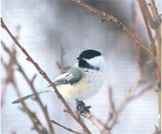

You don't have to look far in nature to see that not just good things come in small packages, but truly remarkable, holy-smoke kinds of things. Take, for instance, those diminutive little chickadees flitting about our winter bird feeders.
At first, you might not think they're anything special. Certainly, few North American birds are more common. Black-capped chickadees live coast to coast throughout most of the northern half of the contiguous United States, plus much of Canada and Alaska. In the Midwest and the South, where the black-capped's range ends, the look-alike (but somewhat smaller) Carolina chickadee takes up residence. The mountain chickadee, with masked-bandit face markings, claims the West. Plus, three other chickadee species make their homes in North America - the chestnut-backed (Pacific Northwest), the Mexican (Southwest) and the boreal (Far North).
But "common" hardly means "ordinary" in the case of chickadees.
Your average chickadee, a fidgety puff of mostly feathers and bone, weighs about one-half ounce. How do these tiny birds routinely survive frigid days and freezing nights?
In autumn, chickadees, like other small birds, grow a thicker coat more - small, downy feathers, with lots of heat-trapping air spaces. By winter, the birds have gained 25 percent more plumage. On a cold day, chickadees fluff up these feathers to at least an inch. The result is a downy ball of a bird, its spherical overcoat astonishingly effective. At 10 degrees below zero, the difference between a tiny chickadee's body temperature (108 degrees) and the outside air - just an inch of insulating feathers away - is 118 degrees.
Of course, it takes quite a furnace to generate and maintain the bird's high body temperature. Indeed, the chickadee is a metabolic fireball. Its heart beats 500 times a minute - at rest. Given intense activity, the rate doubles to 1,000 beats. Even when perched, the little chickadee is never still, cocking its head, shifting its feet. And beneath all those feathers, the bird continually flexes its chest muscles, shivering to generate yet more heat.
Being all fired up is fine during the day when the sun is up and there's food to be eaten. But come sundown every winter day, the bird faces 12 or more foodless hours of dark and cold. How does it cope? First, by holing up in a tree cavity. Chickadees are the only birds besides woodpeckers who excavate their own holes. A cavity just big enough for one bird to cram its body and its fluffed feathers into is perfect. Watch your bird feeders in the morning for chickadees with rumpled tail feathers - the result of a night spent in cozy quarters.
Even with the best shelter, a chickadee also must sustain its inner fires through the night or perish. Chickadees don't have a crop in their throats to store food that is slowly digested while sleeping. Instead, they turn down their internal thermostats, conserving energy and saving fuel. They reduce their need for food and oxygen on cold nights by going into a state of controlled hypothermia, lowering their body temperature by as much as 20 degrees.
Regardless of the birds' nighttime energy efficiency, during the day the tiny fliers must eat almost constantly to feed their furnaces and put on enough surplus fat - about 10 percent of their normal body weight - to get them through another night.
Because they need a lot of food, especially when the days shorten and sustenance becomes scarce, chickadees spend all autumn gathering and storing food. Unlike many woodland food hoarders, chickadees don't put most of their provisions in large caches. Instead, they hide one or two tidbits at a time in separate locations over a wide territory. Biologists call this behavior "scatter hoarding," which, they contend, ups the odds of survival. If a competitor finds one stash, all is not lost - there are many more scattered stockpiles.
So in fall, each chickadee works to fill its own multi-acre, here-and-there food pantry. It readies insect prey by plucking off the heads and wings, then stuffs the bodies beneath bits of loose bark or inside curled leaves. Tiny seeds are wedged beneath layers of lichen; pushed between evergreen needle clusters; poked into the ground. (You can witness this behavior at your own feeders during autumn. After filling their bellies in the morning, chickadees will spend the rest of the day shuttling sunflower seeds to hiding places)
The sheer scale of the birds' winter food-preparation activities is astonishing. Carolina chickadees and others that live where winters are relatively mild may store several hundred separate food items. Chickadees in the North or in mountain regions will hide several thousand tidbits in as many locations.
Even more remarkably, chickadees remember precisely where they've stored all that food. Experts once thought the birds retrieved stashed goodies more or less by chance. But researchers have found the chickadee that hides a given meal in a given place is the same chickadee that returns - sometimes months later - to gobble it up.
How can a bird with such a small brain remember the precise locations of so many food caches? If you've ever played the game of Concentration - or simply tried to keep track of where you put your car keys - you can begin to appreciate the feat.
Chickadees grow fresher, better brains every autumn, when they need the extra recall power. Old brain cells die off, essentially wiping the slate clean, while new brain cells generate rapidly to replace them. The hippocampus, the area of the brain responsible for memory and spatial relationships, becomes larger, giving the bird a greater ability to mentally map its home territory and cache locations. Later, in spring and summer when fresh food is available, the bird's hippocampus shrinks to its normal size.
So much for the notion of "bird brain." The chickadee's renewable brain, with its ability to produce new neurons each year when needed, then discard them when not, may eventually point researchers toward better treatments of Alzheimer's disease and other degenerative brain maladies.
Like most birds, chickadees are monogamous. They live in pairs during spring and summer, their breeding season. Each couple claims and defends a territory of several acres.
But in fall, chickadees form winter flocks typically containing six to 10 birds - usually with equal numbers of males and females, which are paired. A flock isn't a family, but a sort of neighborhood association of chickadee couples. Within the flock, male chickadees rank above female, older above younger. The top-ranked chickadee - usually an elder male - gets to eat first at a feeder, and can chase away any other flock member. The second-ranked bird can lord it over all those below it, and so on.
You can watch the chickadees' intriguing behaviors and social dynamics in back yards across the country. I confess, though, that what I most admire about chickadees has little to do with natural science and more with sheer pluck.
See for yourself some somber winter's day. Check out the chickadees - ever busy, always chipper, in a colder, harsher place than you, but making the best of it just the same.
Amazing how such a little bird can lift our spirits.
|
In frigid weather, chickadees fluff up their tiny feathers at least an inch, creating their own down comforter. |
 Chickadees are the only birds besides woodpeckers who can excavate their own next cavities. |
|
|
|
|
|